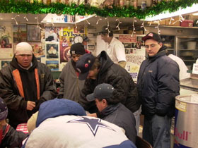

Submitted on Thu, 05/08/2008 - 2:31am

Please keep calling City Bakery; apparently it has cut off the general manager's extension! You can call at (212) 366-1414 and then just press 0 and ask for a manager. Please send the revised call to action below to your lists, otherwise folks won't be able to get through:
The City Bakery chain enjoys an image of being a "green" and "socially conscious" business. Yet, the City Bakery NY sells seafood from labor rights violator, Wild Edibles, Inc.
Given City Bakery's progressive image, current and former Wild Edibles workers were surprised when owner Maury Rubin refused to even enter into a dialogue regarding the hardships they face.
Submitted on Mon, 05/05/2008 - 2:36pm
 By DAVID TABER - Jamaica Plain Gazette, May 2, 2008
By DAVID TABER - Jamaica Plain Gazette, May 2, 2008
SOUTH
ST.—Two workers who were fired from the Jamaica Plain store of Harvest
Co-op Markets in the last six months claim they were terminated for
expressing support for union organizing efforts at the nonprofit
supermarket. Harvest denies their accusations.
Diego Bencosme and Deon Furtick had both worked at Harvest for
close to four years. They were both fired for failing to punch out when
they went off shift—a rule they claim was rarely, if ever, enforced
during their tenures.
They were fired without prior warnings, they said.
Both say they were fired because of their support for a current
effort by the Industrial Workers of the World (IWW) to organize at
Harvest. Both have filed complaints with the National Labor Relations
Board.
Submitted on Mon, 05/05/2008 - 2:29pm
 By By Alex Kane - The Indypendent, May 2, 2008
By By Alex Kane - The Indypendent, May 2, 2008
Brooklyn, New York—Around 150 people marched across the Brooklyn Bridge with Make the Road New York and the Industrial Workers of the World NYC Branch for a May Day
immigrant rights demonstration. Flanked by red and black Wobbly flags
and signs that read “Opportunity for Immigrant Workers,” the
demonstrators chanted slogans like “Si se puede,” and “El pueblo,
unido, jamas tera vencido.”
There was a boisterous rally held before the march at Cadman Plaza
Park in Brooklyn, with music, dancing and chanting. One song’s lyrics,
roughly translated, said “we will overcome misery” and “we’ll have to
break the chains.”
Submitted on Sat, 04/26/2008 - 12:53pm
 For Immediate Release: Brandworkers International
For Immediate Release: Brandworkers International
Contact: press (at) brandworkers.org
Press Conference and Rally: Workers Will Ask Judge to Hold Wild Edibles in Contempt of Court Over Retaliatory Firings
Workplace Justice Campaign Has Persuaded Over Twenty of NYC's Most Well-Known Fine Dining Restaurants to Steer Clear of Wild Edibles
COMPELLING VISUALS: Spirited Chanting Workers - Vibrant Signs and Banners
What:
Submitted on Sat, 04/12/2008 - 1:59pm
A group of Latino workers, at the Twin Cities-based D’Amico’s & Sons restaurant chain have organized and taken direct action to resist being fired for receiving “No-Match” letters from the Social Security Administration. The workers many who have well over a decade of service for the company have been joined by family members, some co-workers, the Workers Interfaith Network (WIN), Students for a Democratic Society (SDS) and the Twin Cities General Membership Branch of the Industrial Workers of the World (I.W.W.) and others.
D’Amico’s announced that Monday, March 31, 2008 would be the last day of work for 17 employees who had received the “no-match” letters. This appears to be illegal as the Social Security’s “no-match” notices explicitly state that employers should take no “adverse action” against employees based on these letters. “No-match” means a problem has been identified with a worker’s name and social security number not matching. Sometimes this can be due to immigration status, other times a simple typo can trigger the letter. In any case, the legal precedent has been that it was up to employees to correct the issue and not employers. A California Federal Court halted attempts by the Bush administration to penalize employers for having workers with “no-match” letters.